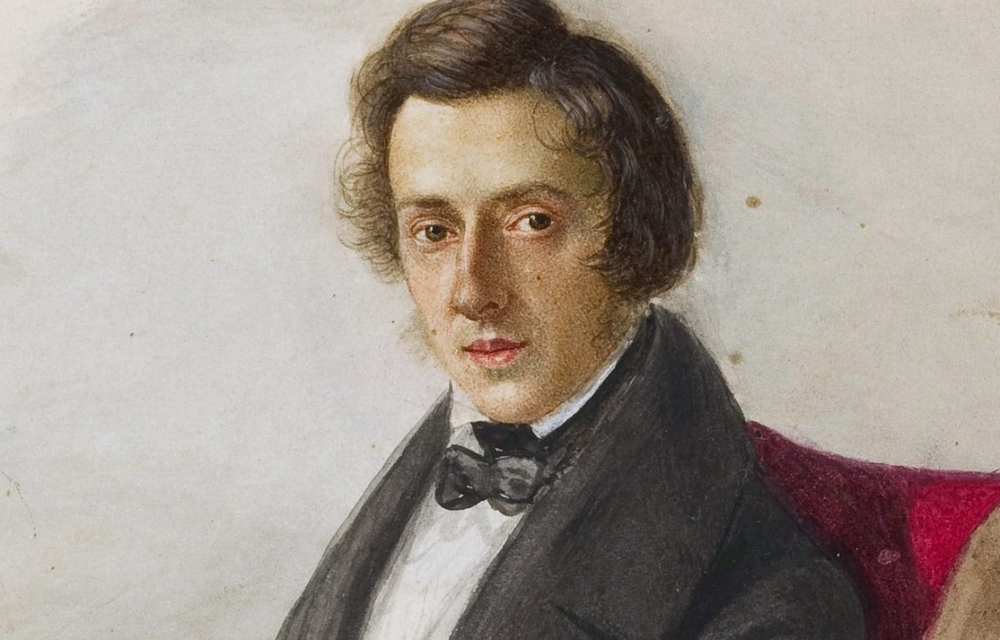

Écrits › Chroniques & réflexions
Sieur Pichon
27 juin 2020

Sieur Pichon
« Ne dit vrai que celui qui parle d’ombres » Paul Celan
Lorsque l’on se prend à penser à Chopin, l’image qui nous vient immanquablement en tête est celle d’un compositeur maladif, fragile, ô combien mélancolique et tout entier dévolu à son instrument. À l’instar d’une entité, d’un médium ou d’un prophète qui, pour se faire comprendre du monde ne peut choisir qu’un moyen unique de communication. Pour lui, les mots étaient trop incapables à ne rien exprimer que des sentiments confus, nébuleux. Son âme, il choisira donc de la peindre en musique, par le concours de son clavier. Les notes colorées, bleues si l’on en croit George Sand, étaient ses mots et il les mania mieux qu’il n’aurait pu le faire dans aucune autre langue, dans aucun autre langage.
Telle est l’image que l’on a immédiatement voulu associer au compositeur polonais, et ce déjà de son vivant. Un artiste dont le cœur s’épanche langoureusement sur le mal de son exil, sur la perte des siens et dont les malheurs le forcent, pauvre artiste incompris, à côtoyer la société mais à ne jamais pouvoir en faire partie totalement. Du reste, c’est le lot des « artistes » ! La « tragédie du génie {…} qui aspire à sortir de sa solitude d’artiste et à descendre de son empyrée vers les milieux ordinaires de l’humanité authentique 1». Et force est de constater que cette image reste largement véhiculée encore aujourd’hui. L’image d’une force créatrice, d’un siècle en proie aux émois de l’âme, et quelle âme ! À la passion nerveuse et au destin tragique, insatiable à se rassasier des desiderata de ses hommes et femmes, tel Saturne dévorant ses propres enfants !
Peut-être est-ce par souci d’une vision complaisante vis-à-vis de l’image du « compositeur romantique » telle que nous l’imaginons que cette vision perdure encore de nos jours : Un être tout entier torturé par ses passions, sur lequel le destin s’acharne inéluctablement sans pouvoir réussir à le briser tout-à-fait. Le voilà l’artiste romantique, Mesdames et Messieurs, le vrai.
« Felix Meritis »
Ce cliché est si tenace, que certains reprocheront au pauvre Mendelssohn de ne pas être suffisamment pauvre justement : « l’artiste fortuné » ou encore « le romantique heureux », tels sont les surnoms du compositeur du Songe d’une nuit d’été. Après tout, comme l’a si bien dit Balzac : « Le bonheur ne crée rien d’autre que des souvenirs ». Comment s’étonner alors que le gentil Mendelssohn, à la fortune familiale considérable, qui plus est au parcours impeccable, doué de dons qui dépassent largement le cadre de la musique, et qui, comble de toupet, n’a pas même la décence de voir le jour entre la vie et la mort, d’au moins se battre sa vie durant pour la lumière ou bien, à défaut et en derniers recours, de simplement sombrer dans la folie, comment s’étonner donc qu’il ne puisse dépeindre convenablement l’âme romantique dans sa simplicité maladive.
Peut-être est-ce dans un souci de rétablir un certain équilibre justement que ce « notaire facile et élégant2 » s’empresse de mourir, à peine six mois après sa sœur bien-aimée, à respectivement 38 et 41 ans. Certes, d’un simple AVC parait-il, on fait comme on peut. Mais tout de même un an plus jeune que Chopin (AVC qui, dans la famille Mendelssohn, fait office de tueur en série tout de même). L’effort est considérable. Eu égard à son concerto pour violon, et peut-être grâce aussi aux Visiteurs…, Felix Mendelssohn siège dorénavant parmi les compositeurs qui devaient marquer l’histoire.
Donc si la face « mélancolique et torturée », pour ne pas dire dépressive, et hautement certifiée « Romantique », de Chopin nous est bien connue, et reste largement véhiculée encore aujourd’hui, en raison peut-être du goût prononcé du grand public pour une partie restreinte de l’œuvre de Chopin, c’est-à-dire : quelques Nocturnes ; l’incontournable et magnifique 1ère ballade ; ses deux Concertos ; une petite partie des études et quelques autres valses et préludes. C’est tout de même bien méconnaitre la quantité d’œuvres emplies de gaieté, de légèreté et de malices audacieuses qui confèrent un tout autre visage au poète polonais. Les pièces d’épopées fantastiques et surtout, surtout, les souvenirs de fêtes insouciantes de sa patrie rythmant la vie quotidienne des paysans et qui le marquent lui et par extension, une grande partie de ses mazurkas, des polonaises et des rondos etc.
Mais si l’on s’attarde un peu plus sur ce personnage haut en couleur que fut Chopin, on doit bien se rendre à l’évidence qu’une partie de sa personnalité demeure largement inconnue du public aussi bien que d’un grand nombre de musiciens : son don incomparable pour la comédie ! Caricature musicale, sociale ou psychologique ; mime ; portrait-charge, théâtre d’ombres etc. Il semblerait que Chopin ait exercé ces différentes pratiques avec une aisance et une virtuosité déconcertante comparable à son exécution pianistique, légendaire, si l’on en croit la place et surtout la récurrence que prennent ces témoignages dans les sources qui nous sont parvenues. Non content de nous dépeindre l’artiste comme un « poète faisant ressortir toute l’âme de la musique » et plus encore, elles nous révèlent un Chopin malicieux, volontiers joueur et adepte du pantomime, ne demeurant pas en reste pour amuser la galerie.
Polichinades en tout genre ! Le club des deux.
Au sein de la famille Chopin, Frédéric, à l’instar de Louise, d’Isabelle et surtout de la petite Émilie, se prit de passion pour les Lettres. Si plus tard la littérature n’occupera pas pour lui une place aussi prédominante que chez Liszt ou d’autres compositeurs de la même époque, enfant, Chopin développe un véritable goût pour le théâtre, sous toutes ses déclinaisons. Et dans la famille Chopin, la distraction favorite des quatre joyeux bambins était d’écrire nombre de comédies et de jouer au jeu des charades. Lors de l’année de son intégration au Lycée en 1823, Frédéric écrivit, en collaboration avec la petite Émilie, alors âgée seulement de 11 ans, une comédie en 4 actes et en vers intitulée : « Une méprise ou le filou présumé3 » que les jeunes auteurs signèrent « Frédéric et Émilie Pichon ». La pièce, aux airs de Vaudeville, fut donnée pour la Saint-Nicolas, fête du chef de famille. Le jeune musicien y tint avec brio le rôle cocasse, au vu de son corps frêle, du bourgmestre appelé « Gros-Ventre4 ».
Plus tard, au cours des vacances d’été de 1824, qu’il passa en Masovie, à Szafarnia chez son camarade Dominique Dziewanowski, il s’occupa à la rédaction d’un journal à l’imitation du Courrier de Varsovie : Le courrier de Szafarnia5. Il y relatait abondamment la chronique locale et y tenait une critique musicale dont le ton, parodiant le style sentencieux des graves feuilles varsoviennes pour y parler des incidents les plus banals de son séjour, se voulait au contraire humoristique et sarcastique comme le montre l’extrait suivant, datant de la fin du mois d’août :
« Le 29 courant, M. Pichon, à son passage à Nieszawa, entendit une Catalane qui, assise sur une haie, chantait à tue-tête. Il fut à ce point conquis que, non content d’entendre l’air et la voix, il voulut aussi entendre les paroles. Il passa par deux fois près de la haie, mais en vain, et ne put saisir un seul mot. Enfin, incapable de surmonter sa curiosité, il sortit de sa poche quelque menue monnaie qu’il offrit à la chanteuse pour qu’elle consentit à répéter sa chanson. Elle fit la grimace, se trémoussa et refusa ; mais, encouragée par la vue des pièces de monnaie, elle consentit enfin et se mit à chanter la petite mazurka, dont le rédacteur, avec la permission des autorités et de la censure, cite seulement ces deux petits vers : « Regarde là-bas, au-delà des collines, comme le loup danse ! Hélas ! il n’a pas d’épouse, et c’est pourquoi il est si désespéré ». ».
Ou encore :
« Le sieur François Chopin (deuxième prénom de Frédéric) fait tous les jours des promenades équestres, mais si honorablement qu’il et toujours assis… sur la banquette de derrière. »
Au retour de ses vacances d’été, riches en découvertes et aventures, qui nourriront longtemps l’œuvre et la mémoire du jeune compositeur, Frédéric, dont l’esprit malicieux se montrait toujours plus friand de nouvelles facéties, fonda, avec le concours de sa plus jeune sœur, la Société littéraire de Récréation6 en réaction aux cercles de littératures de la capitale, parfois il est vrai, un peu trop pompeux et dans lesquels la monotonie le disputait parfois à l’ennui pour un jeune écolier de son âge. Notre compositeur en devint bien sûr le président, secondé de près par sa sœur Émilie, dont l’esprit débordant d’ingéniosité se montrait plus créatif que son frère et ses sœurs pour mettre en scène leurs pièces juvéniles, fut réquisitionnée en tant que secrétaire. Les pensionnaires de la maison familiale eux, devinrent les éminents membres du club. Les réunions, sûrement très sérieuses n’en doutons pas, se tenaient le soir, et les membres fondateurs devaient réciter leurs dernières œuvres, même si le plus souvent la littérature disparaissait tout à fait pour ne laisser place qu’aux jeux d’enfants.
Les jeunes gens se réunissaient donc dans le salon des Chopin, où ils se livraient là, à toutes sortes de jeux et de farces enfantines, tandis que Frédéric exécutait pour cette joyeuse camaraderie quelques morceaux de piano, le plus souvent sortis tout droit de son imagination. Et il semblerait en effet que son goût pour la musique sérieuse et les grands classiques laissaient rapidement la place aux devinettes musicales dont son grand plaisir était de faire deviner un personnage ou un événement à ses amis uniquement avec les notes que son modeste piano pouvait fournir, sous des doigts brillants certes. Lorsqu’il se trouvait enfin las des sons qu’il tirait de son instrument, il fermait le couvercle de son piano et se transformait en acteur. Là, à la requête générale de cette jeune assemblée, il imitait tantôt le géant Woyciechowski (son camarade), tantôt Linde le fourmilier (le directeur du lycée) ; et tous les personnages du lycée faisaient partie de son répertoire.
Les occasions de faire montre de son talent de comédien devaient rapidement se multiplier et surtout prendre de l’importance. C’est à dire qu’au sein de la maison familiale, Nicolas Chopin recevait de nombreux intellectuels et au fil du temps, les représentations des jeunes enfants n’étaient plus réservées aux seuls camarades d’écoles mais bien à tous les invités de la maison. Et en effet, peu avant son entrée dans la sixième division du lycée, la même qui devait lui ouvrir les portes du diplôme de Bachelier, un membre de la troupe française de théâtre de Varsovie fut le heureux témoin d’une entreprise pour le moins hardie de notre jeune compositeur. Les jeunes Chopin, Frédéric et Émilie, donnèrent une version à deux de la pièce que jouait alors la troupe française7. Frédéric y campait le rôle d’un commerçant fraîchement enrichi qui voulait imiter les manières de la noblesse. Le rôle, en français, prouvait assez bien que les talents de comédien du jeune Chopin ne se trouvaient nullement entravés de ce fait et pouvaient s’exprimer aussi bien dans sa langue maternelle que paternelle. Le comédien Hervé qui assista à la représentation incarnait justement le même personnage sur les planches du théâtre professionnel. Ce dernier ne put s’empêcher de louer Frédéric pour son talent et admira particulièrement la façon comique dont il contrefaisait les gestes d’un tailleur devant sa table de travail.
La place croissante du théâtre dans la vie du jeune Chopin, et par ailleurs ses talents réputés de comédien, ne tardèrent pas à lui forger une petite réputation dans tout Varsovie, à tel point que l’acteur polonais Piasecki chercha à convaincre Frédéric d’abandonner la musique pour se consacrer entièrement au théâtre. Et, aussi étonnant que cela puisse nous paraître aujourd’hui, il fut loin d’être le seul à conseiller au musicien, pourtant déjà fort de ses capacités, de ne pas « perdre son talent à faire de la musique ». Ainsi, bien des années plus tard, le célèbre comédien français Pierre François Touzé, connu sous le nom de Bocage déclara : « Quel dommage que ce Garçon se soit fourvoyé dans la musique ! Il y avait en lui l’étoffe d’un comédien de premier plan ! 8». La remarque nous fait sourire, tant on peine à penser un seul instant que Chopin ait pu se « fourvoyer » dans la musique, certes, mais elle interroge et laisse songeur quant aux capacités et au talent naturel de Chopin pour la comédie. Que la remarque vienne d’une seule personne, et l’on aurait aussitôt oublié cette simple anecdote sur la vie du compositeur, du moins en aurions-nous eu vaguement connaissance dans quelque obscure biographie relatant un fait plus ou moins incertain. Quelle soit encore uniquement une lubie d’enfant malicieux qu’il devait abandonner après son départ de Varsovie et tout au plus l’on s’en serait souvenu comme d’un fait amusant dans la vie de ce personnage taciturne et mélancolique. Mais tout de même, cet aspect de la personnalité de Chopin devait si bien l’accompagner toute sa vie durant qu’il en ait fait mention, et toujours avec les mêmes termes élogieux qui plus est, par tous ceux qui le côtoieront de près ou de loin et ce jusque dans la Comédie Humaine, dans laquelle Balzac décrit ainsi le pianiste : « (…) et doué du même talent que Chopin le pianiste possède à un si haut degré pour contrefaire les gens, il (Bixiou) représenta le personnage à l’instant avec une effrayante vérité 9».
Et ce trait de caractère, cette double passion pour la musique et le théâtre, Chopin le conserva longtemps, bien après les derniers jeux enfantins et la Société littéraire de Récréation. Il fut d’ailleurs, au cours de sa relation avec la romancière George Sand, l’instigateur du Théâtre de marionnettes de Nohant qu’il constitua en compagnie de George Sand et de son fils Maurice. Ce théâtre était constitué pour l’essentielle de pantomimes dansées ; de charades ; de saynètes et de comédies à intrigue ou de drames psychologiques. Ainsi, la romancière écrivit : « Le tout avait commencé par la pantomime et ceci avait été de l’invention de Chopin. Il tenait le piano et improvisait, tandis que les jeunes gens mimaient des scènes et dansaient des ballets comiques. Je vous laisse à penser si ces improvisations admirables ou charmantes montaient la tête et déliant les jambes de nos exécutants. Il les conduisait à sa guise et les faisait passer, selon sa fantaisie, du plaisant au sévère, du burlesque au solennel, du gracieux au passionné. On improvisait des costumes afin de jouer successivement plusieurs rôles. Dès que l’artiste les voyait paraître, il adaptait merveilleusement son thème et son accent à leur caractère 10».
Chopin conserva donc cet attrait irrésistible pour le théâtre une fois adulte et après avoir quitté la Pologne, et de même qu’il suscitait déjà l’admiration enfant, ses dons de comédiens ne cessèrent d’étonner ses contemporains, et ce même à Paris, au milieu d’un formidable bouillonnement artistique. La critique, comme aujourd’hui du reste, restant très facile et très prisée, l’éloge de l’habileté de Chopin en ce domaine, et encore une fois sa récurrence, ne laisse aucun doute sur l’extraordinaire talent de comédien que celui-ci devait posséder. Anna Thun-Hohenstein, une élève du Maître nota ainsi : « Avec son remarquable talent d’imitateur — il s’en étonne tout le premier — il nous a fait rire aux larmes en contrefaisant un Anglais qui écorche le français11 ».
Il est étonnant de constater que Chopin, d’un naturel sensible et délicat, renâclant devant l’exécution publique à cause du trac n’éprouvait au contraire aucune gêne à devenir le centre de l’attention dès lors qu’il s’agissait de jouer la comédie. Et pourtant on sait quels tourments étreignaient le pauvre Frédéric dès lors qu’il était la proie d’un public plus grand qu’un cercle d’amis restreint et soigneusement trié.
George Sand à Pauline Viardot
18 Avril (1841)
« Une grande, grandissime nouvelle c’est que le petit Chip Chip va donner un grrrrrrand concert. Ses amis le lui ont tant fourré dans la tête qu’il s’est laissé persuader. Cependant il se flattait toujours que cela serait si difficile à arranger, qu’on y renoncerait. Les choses ont été plus vite qu’il ne croyait. À peine avait-il lâché le oui fatal, que tout s’est trouvé fait comme par miracle, et que les ¾ de ses billets étaient pris, avant qu’on eût même annoncé, alors il s’est réveillé comme d’un songe, et l’on ne peut rien voir de plus drôle, que le méticuleux et irrésolu Chip Chip, obligé de ne plus changer d’avis. Il espérait que vous viendriez et que vous chanteriez pour lui, accompagnée par lui. Quand j’ai reçu votre lettre et qu’il a perdu cet espoir, il voulait défaire son concert. Il n’y avait plus moyen ; il s’était trop engagé. Il a été se jeter dans les bras non, je veux dire, aux pieds de Mme Damoreau. Mr Ernst lui raclera son beau violon, et voilà. Ce cauchemar chopinesque se passera dans les salons de Pleyel le 26 (avril 1841). Il ne veut pas d’affiches, il ne veut pas de programmes, il ne veut pas qu’on en parle. Il est effrayé de tant de choses que je lui propose de jouer sans chandelles, et sans auditeurs sur un piano muet ».
Et pourtant, ce même « Chip Chip » n’était pas en réserve dès lors qu’il s’agissait d’animer la galerie. Et force est de constater qu’il finit non seulement par se faire une petite renommée mais que l’on se trouvait presque aussi heureux de pouvoir l’entendre au piano que de l’admirer faire ses Chopinades. Voici d’ailleurs un extrait d’un billet de George Sand à Charlotte Marliani.
Nohant, 2 octobre 1843
Moi, j’ai eu la visite de Mendizabal un beau soir, au moment où je ne l’attendais guère, comme bien vous pensez. Il a passé ici trois heures, une à dîner et à bavarder, deux à entendre Chanter Pauline (Viardot), et à faire faire à Chopin toutes les charges de son répertoire. Il est parti à minuit (…)12.
« Toutes les charges de son répertoire » ! Depuis sa plus tendre enfance Chopin possédait la capacité de contrefaire son entourage avec suffisamment d’aisance et de jovialité pour qu’ils n’en prirent pas ombrage le moins du monde. L’écrivain polonais Kazimierz Wladyslaw Wojcicki, nous livre par ailleurs une anecdote hilarante qui nous éclaire un peu plus sur les capacités de notre compositeur : « Les premiers temps de son séjour à Paris Jozef Nowakowski pria Frydeyk de lui faire la connaissance de Liszt et de Pixis qui, avec Kalkbrenner, formaient un triumvirat souverain dans la multitude des pianistes virtuoses. « Tu n’en as pas besoin, fit Chopin, attends une seconde, et je vais te les montrer tous deux, mais chacun séparément. » Ayant dit cela, il s’assit au piano et, prenant la posture de Liszt, il se mit à jouer comme Liszt, imitant sa gesticulation et ses mimiques. Au bout d’un moment, il changea de rôle et se transforma en Pixis, jouant à la manière de celui-ci. Il se trouva le lendemain que Chopin et Nowakowski étaient au théâtre. Chopin ayant quitté la loge un instant, Nowakowski jetait un coup d’œil sur la salle quand il avisa Pixis aussi dans une des loges voisines. Convaincu que c’était Chopin qui répétait la plaisanterie de la veille, il entra dans la loge et, s’étant approché de Pixis, lui dit en lui tapant sur l’épaule : « Trêve de plaisanterie avec tes imitations et ton théâtre, redeviens toi-même ! » Pixis sursauta, surpris de la familiarité d’un homme qu’il rencontrait pour la première fois de sa vie. Heureusement, au même instant Chopin apparut dans la loge de Pixis et, ayant compris ce qu’il se passait, il éclata d’un rire cordial qui désarma manifestement Pixis, un peu choqué, surtout d’apprendre ce qui avait précédé cet amusant quiproquo 13».
Poursuivons avec une anecdote à peine croyable, tant elle parait surréaliste, racontée par un des élèves de Liszt et qui nous vient directement du compositeur Hongrois.
Weimar, 24 juillet 1873
« Comme nous parlions du talent d’imitation, Liszt me raconta une petite anecdote amusante concernant Chopin. Au temps de leur jeunesse, quelqu’un lui ayant parlé du talent remarquable de Chopin en matière d’imitation, Liszt dit à Chopin : « Viens donc chez moi ce soir et montre-moi ce que tu sais faire. » Chopin y alla. Il s’était procuré une perruque blonde (« jetais très blond à cette époque », dit Liszt) qu’il avait mise et se rendit ainsi à l’appartement de Liszt. Voilà qu’arrive une connaissance de Liszt ; Chopin va l’accueillir à la place de Liszt et contrefait sa voix et son allure si parfaitement que l’autre le prend pour Liszt et fixe un rendez-vous avec lui pour le lendemain — « et j’étais dans la pièce », dit Liszt14 ».
Personnellement je m’interroge sur un détail, lorsque Liszt dit « et j’étais dans la pièce » insinue-t-il que son visiteur également et que se trouvant en présence de ces deux Liszt, Chopin lui ressembla plus qu’il ne devait se ressembler lui-même ? Sans cela l’histoire est à peine croyable, avec, elle est carrément surréaliste !
Lettre de Chopin à Titus Woyciechowski
25 décembre 1831
« Je suis gai extérieurement, surtout parmi les « miens ». J’appelle « miens » tous les Polonais. Mais au fond de moi-même quelque chose d’indéfinissable me tourmente – comme des pressentiments, des inquiétudes, des cauchemars, quand ce n’est pas l’insomnie. Je me sens tantôt indifférent à toutes choses, tantôt en proie à une nostalgie angoissée. J’ai le désir de vivre aussi bien que le désir de mourir, et j’éprouve parfois une sorte d’engourdissement total qui, au reste, n’est pas sans douceur, mais qui me rend absent de tout. Et soudain, des souvenirs précis se réveillent et me torturent : rancœur, amertume, un affreux mélange de sentiments malsains qui me ronge et m’épuise. »
Il est évident que malgré le bon penchant de son âme pour la gaieté et les sentiments heureux, le caractère de Chopin fut indissociable d’une certaine mélancolie que ni les succès, ni l’attachement à George Sand n’ont pu effacer totalement. Du reste, c’est ce qui a nourrit les fantasmes sur le poète solitaire expiant son âme par un éternel chant du cygne, des doigt longs et fins parcourant le clavier, mus par « l’Ariel du piano » et qui font dire au pianiste Charles Hallé : « Rien n’y rappelle qu’un être humain à produit cette musique ».
Il semblerait que dans son goût pour les imitations, Chopin recherche, parfois, un antidote à sa tristesse et sa nostalgie. Ainsi, ses imitions prennent parfois une résonance mélancolique comme l’attestent ces quelques lignes, écrites après plusieurs mois de son exil à Vienne : « Lorsque j’ai des moments de tristesse, je vais chez Madame Szaszek ; j’y trouve d’habitude quelques braves polonaises qui m’encouragent et me dorlotent tellement, que je me mets aussitôt à imiter les dignitaires de l’endroit. C’est une nouvelle polichinade (poliszynel) de ma toute dernière façon ; vous ne la connaissez pas encore mais ceux qui l’ont vue se tordent de rire 15». L’on peut se demander alors si Chopin, amuseur et farceur de génie de la haute société, éprouve autant de plaisir à ses imitations qu’il en suscite manifestement chez les autres ? Son goût prononcé, tout au long de sa vie, pour la farce et la caricature reflète-t-il une partie du caractère du compositeur ou est-il simplement la résultante d’un moyen désireux d’échapper à sa mélancolie profonde ? Et enfant, ce trait de caractère devait-il déjà servir à conjurer sa mélancolie ou bien était-il le moyen de gagner l’admiration de ses fidèles camarades pour lesquels Chopin conserva toute sa vie une affection profonde ?
George Sand nous apporte, à ce titre, un témoignage fort édifiant : « Sa mimique extraordinaire, merveilleuse, ses persiflages, ses charges d’un fantastique, d’une exquisité, d’un humour extraordinaire ne montraient pas le plus petit rayon de gaîté en lui-même. Il faisait pâmer de rire tout un salon sans qu’un sourire éclairât son visage ».L’auteur continue ainsi : « C’est alors seulement qu’il donnait tout son génie et tout son talent. C’est alors aussi qu’après avoir plongé son auditoire dans un recueillement profond ou dans une tristesse douloureuse, car sa musique vous mettait parfois dans l’âme des découragement atroces, surtout quand il improvisait ; tout à coup, comme pour enlever l’impression et le souvenir de sa douleur aux autres et à lui-même, il se tournait vers une glace, à la dérobée, arrangeait ses cheveux et sa cravate, et se montrait subitement transformé. C’étaient toujours des types tristes, quelques comiques qu’ils fussent, mais parfaitement compris et si délicatement traduits qu’on ne pouvait se lasser de les admirer17 ».
Cette curieuse manie du compositeur d’effacer les restes d’un « songe mélancolique » créé sous ses doigts fins est certainement à mettre en relation avec cet autre commentaire, de Schumann cette fois, qui raconte ses propres souvenirs de Chopin : « C’était déjà un tableau inoubliable de le voir assis au piano, pareil à un voyant (Seher) perdu dans ses songes ; de voir comment le songe crée par lui se traduisait dans son jeu et comment, chaque morceau fini, il avait la funeste habitude de parcourir d’un doigt toute l’étendue du clavier gémissant comme pour se dégager puissamment de son songe 18». Que ce soit pour épargner à un public déjà attendri le poids de la langueur dans laquelle le pianiste les a lui-même plongés, et de les soulager pour ainsi dire de leur torpeur, ou bien pour se détacher maladroitement de ce à quoi son esprit, malgré les convenances de la bonne société, se trouve tout entièrement tourné, Chopin brise singulièrement les sentiments qu’il peint de la plus admirable des façons, opérant ainsi une emprise sur ses émotions, et par la même sur celles des autres.
Une amie de George Sand, Élisa Fournier nous rapporte, dans une lettre à sa mère, un éclairage supplémentaire sur ce phénomène. Premièrement, il était donc admis qu’entendre le pianiste, que « chacun connaît, que chacun admire, et que pourtant presque personne n’a entendu 19» était considéré comme une occasion rare et un privilège unique, et que ce fait relevait du caractère affable du compositeur. Deuxièmement, il semblerait qu’au simple gré de ce que Chopin ressentait, il pouvait communiquer ses états d’âme à toute une assistance, et ce à la manière d’un prestidigitateur :
« Quelle soirée nous avons passée, chère mère ! Au milieu de ces impressions délicieuses, je te regrettais plus que jamais, car tu eusses été bien heureuse d’entendre comme nous l’admirable talent de Chopin, il a été d’une complaisance indigne, il était monté à la musique, et il n’a cessé que vers minuit de nous faire passer à son gré par toutes les émotions heureuses ou tristes, gaies ou sérieuses, suivant qu’il les éprouvait lui-même. Je n’ai de ma vie entendu un talent comme celui-là ; c’est prodigieux de simplicité, de douceur, de bonté et d’esprit. Il nous a joué dans ce dernier genre la charge d’un opéra de Bellini, qui nous a fait rire à nous tordre, tant il y avait de finesse d’observation et de spirituelle moquerie du style et des habitudes musicales de Bellini20 ».
Et nombre de témoignages insistent sur cette capacité du pianiste polonais. Chopin possédait la capacité de faire ressentir n’importe quelle émotion à son public aussi bien grâce à ses compositions, mais aussi et surtout grâce à ses improvisations, dont si l’on en croit là-encore les sources, les compositions ne sont que le pâle reflet21, mais également par son jeu d’acteur comme le rapporta l’écrivain et biographe de Chopin, Antoni Wodziński : « Après avoir ému jusqu’aux larmes un petit cercle d’intimes, par une de ses improvisations, où débordait la tristesse, ou pour nous servir du terme polonais qui lui était propre, le « zal » profond de son âme, il prenait à tâche de le distraire par l’imprévu de son humour, par ce qu’il appelait lui-même ses « polichinades 22».
Et pour ce faire, il semblerait que le répertoire de Chopin comprenait un large éventail de moyens, dont Fanny Erskine, une chanteuse amateur écossaise, nous en apporte un : « (…) Chopin joua magnifiquement pendant un long, long moment puis, plein d’entrain, il fit un théâtre d’ombres sur le mur, montrant tous ses divers talents23 ».
Non content d’une aisance, consacrée par tous, dans l’art de se glisser dans les traits d’un personnage, il semblerait en outre que le compositeur polonais ait eu une grande souplesse physique à sa disposition pour transporter son assistance. Voici ce qu’en dit son élève Gutmann qui relate que : « Tel un clown Chopin était capable de passer ses jambes par-dessus ses épaules24 ». Songeons un instant au corps chétif et maladif de ce singulier personnage, capable pourtant d’une telle prouesse physique. Du reste, nous ne pouvons qu’imaginer en quelle occasion et par quel cheminement extraordinaire, le timide Chopin rappelons-le, a pu se retrouver les deux jambes derrière la tête…
Ce contrôle sur ses émotions, et ses pensées par extension, qu’il communique à l’envie à tout une assistance qu’il ne cesse de faire passer d’un état à un autre, et pour ainsi dire sa volonté de masquer le fond profond de ses émois, Liszt le décrit ainsi : « Chopin était une nature qui comprimait ses passions, nerveuse à l’excès. Il se modérait sans pouvoir se réfréner ; chaque matin il reprenait la tâche difficile d’imposer silence à la fureur qui bouillonnait en lui, à la haine qui le consumait, à l’amour immense qui l’habitait, à sa douleur convulsive, à son exaltation fiévreuse ; et de les contenir à l’aide d’une sorte d’ivresse spirituelle où il se plongeait pour, à travers ses rêves, convoquer un univers enchanté, féérique où il pût vivre et trouver un bonheur douloureux grâce aux sortilèges de son art. Créant avec un subjectivisme total, comme Franz, il parvenait encore moins que lui à faire abstraction de soi l’espace d’un instant pour considérer objectivement quoi que ce fût, incapable par le choix de son sujet et sa manière de le traiter de communiquer son sentiment de façon moins directe. En raison même du combat qu’il menait contre des passions et des souffrances aussi violentes que violemment réprimées, il lui devint presque impossible de trouver du temps pour des travaux de plus longue haleine. La meilleure part de sa production a été conçue dans des dimensions restreintes, et il n’en pouvait pas être autrement car chacune de ses œuvres n’a été le fruit que d’un bref moment de réflexion, juste suffisant pour traduire les larmes et les rêves d’un jour25 ». Liszt pousse même la gageure jusqu’à tenir ce trait de caractère pour responsable de la forme dans laquelle la pensée musicale de Chopin s’est exprimée. C’est-à-dire : des formats brefs, des pièces majoritairement solistes et un chant d’expression tout entier tourné vers un instrument dans une fidélité exclusive. Et en ce sens effectivement, pas une seule des compositions de Frédéric Chopin ne comporte de partie de piano. Du reste, hormis le trio op 8 de 1829, une œuvre de jeunesse pour flûte et piano sur un thème de la « Cenerentola » de Rossini et bien sûr les œuvres avec une partie d’orchestre, Chopin n’a accordé que de brefs regards au chant (Op. 74 – Dix-sept mélodies polonaises) au violoncelle (Op. 3 Introduction et polonaise pour violoncelle et piano ; Grand duo concertant sur Robert le Diable de Meyerbeer pour violoncelle et piano ; Op. 65 Sonate pour violoncelle et piano en sol mineur) qui comportent tous deux les mêmes qualités « chantantes » propres à le séduire.
De quelles façons et avec quelle récurrence, Chopin abandonnait son clavier pour ses Polichinades, et surtout dans quel état d’esprit se trouvait-il alors lui-même ? Voici plusieurs témoignages qui pourraient, peut-être, illustrer le caractère du maître et nous permettre de mieux saisir la figure énigmatique du triste polonais. Le poète romantique Adam Mickiewicz écrit ceci : « C’était la personne la plus amusante que j’aie jamais connue, le talent de Garrick, l’esprit d’un Varsovien et d’un français. Une chose seulement m’impressionnait désagréablement, c’est qu’il amusait ainsi les poupées des salons, qu’il raillait d’ailleurs lui-même avec raison ? Qu’est-ce qu’on ne raconte pas de lui dans les écrits et les entretiens ! Si on lui avait lu cela de son vivant, il aurait fait lui-même une caricature d’après ces dessins où l’on voit des mélomanes aux yeux renversés mélancoliquement. L’âme de sa mère jouait par ses doigts, et celle de son père français riait à gorge déployée — et c’était Chopin26 ».
Le violoniste Eugène Sauzayraconte dans sa correspondance le caractère enjoué de Chopin et le goût prononcé de celui-ci pour les danses de son pays, qu’il se fit fort d’apprendre à ses connaissances : « Ma tante Paillet recevait beaucoup, on dansait chez elle tous les dimanches. Un soir je vis entrer un jeune blond, de figure délicate et distinguée, qu’une jeune nièce de ma tante, née en Pologne, lui présenta. C’était Chopin. On allait danser ; il se mit au piano et nous joua sa mazurka en si bémol ; ensuite, il voulut nous apprendre à la danser. Je le sens encore, me prenant les deux mains, et m’entraînant autour du salon, pour me montrer le pas. Revenant au piano, il nous charma par une musique toute nouvelle et une exécution surprenante. Nous ne comprenions pas alors qui nous avions devant nous27 ».
Les facéties de Chopin ne s’arrêtent pas à la danse loin s’en faut. Mais celle-ci occupe une place toute particulière dans la vie de l’auteur, au point que Liszt devait le surnommer : « Mazurka, Mazurka28 » et dont une grande majorité du répertoire rappelons-le est constitué de danses : Polonaise ; Rondo ; Mazurka ; Valse ; Tarentelle ; Boléro ; Galop etc. La lecture de Frederick Niecks nous apprend à quel point la danse est centrale dans son art de comédien, mais également quel singulier personnage ce drôle d’artiste fut : « (…) une autre anecdote qu’Hiller m’a racontée montre dans quels termes intimes l’artiste polonais était avec la famille Plater, ses compatriotes, et à quelles étranges lubies il lui arrivait de se livrer. Un jour, Chopin arriva dans leur salon en Pierrot ; après avoir sauté et dansé pendant une heure, il disparut sans avoir dit un mot29 ».
Passons sur cette anecdote aussi singulière qu’inattendue, pour nous demander comment était perçu le compositeur en société.
François Stoepel Gazette musicale,
30 novembre 1834
« Reçu dans le salon de mon ami (Hiller) avec cette bonne et bienveillante cordialité allemande que vous connaissez, je me trouvai réuni avec le doyen respectable de l’art musical, l’illustre Cherubini ; non loin de lui, j’aperçus Meyerbeer, le plus heureux et le plus grand de nos compositeurs dramatiques ; plus loin, Baillot, ce prince des violonistes français ; puis notre spirituel et jovial Chopin ; puis le grave et profond Hiller, notre aimable hôte si remarquable par ses vastes connaissances musicales et ses idées élevées sur l’art ; puis enfin, une foule de dames et de messieurs faisant cercle autour de Cherubini et prêtant une oreille attentive aux saillies spirituelles et piquantes de l’aimable vieillard30».
Sophie Léo, dont le salon fut le lieu de rencontres de nombre d’intellectuels et de musiciens, laisse d’importants souvenirs de la vie intellectuelle à Paris au 19ème siècle, mais également sur le compositeur, qui fut l’enfant choyé du couple. Elle écrit à propos : « lorsque je fis sa connaissance il était, sinon vigoureux, du moins en bonne santé ; très gai, caustique même, mais avec mesure et goût. Il possédait un don d’imitation incroyablement comique et avec son art de la moquerie il répandait une bonne humeur indescriptible dans un cercle étroit d’amis31 ».
Le chef d’orchestre polonais Jozef Brzowski rapporte, sur l’une de ses rencontres avec le pianiste, le souvenir suivant : « Chopin nous a joué une foule de ses œuvres, il était de merveilleuse humeur. Il a un grand talent d’imitation. Il a fait Liszt et Pixis et le second surtout, si parfaitement que j’ai éclaté de rire32 ».
Chopin possédait donc ce don de créer des émotions et d’y plonger ses auditeurs, et malheureusement pour nous, la composition ne serait que le plus pâle reflet de tous ses talents, loin derrière son jeu de pianiste, ses pitreries et son don exceptionnel pour l’improvisation. De plus depuis sa plus tendre enfance, Chopin fit preuve d’un caractère jovial et ironique, propre à nourrir son goût prononcé pour la carricature. La lettre suivante est de la main de Chopin lui-même. Il l’a rédigea lors de son séjour à Majorque avec George Sand qui, comme chacun sait, devait rapidement tourner au fiasco le plus total.
Palma, le 3 décembre 1838.
À Julien Fontana,
J’ai été malade comme un chien, ces deux dernières semaines. J’avais pris froid en dépit des dix-huit degrés de chaleur, des roses, des orangers, des palmiers et des figuiers. Trois médecins — les plus célèbres de l’île — m’ont examiné. L’un a flairé mes crachats, l’autre a frappé pour savoir d’où je crachais, le troisième m’a palpé en écoutant comment je crachais. Le premier a dit que j’allais crever, le deuxième que j’étais en train de crever, le dernier que j’étais crevé déjà33.
Frédéric Chopin
En définitive, il est difficile de dire qui fut réellement Chopin, car nous ne disposons, hélas, que de sources rapportées, avec tout ce que cela comporte comme exagérations et oublis et dont tous ces témoignages sont impérativement à remettre en rapport avec le ton, généralement soutenu et passionné, de l’époque. Qui sait avec exactitude comment le même personnage serait décrit avec les mots d’aujourd’hui. Chopin nous aurait probablement fait part de ses états d’âme sur sa story Facebook ou son compte twitter, laissant la charge aux musicologues futurs de générer un caractère à partir de ses sources. Nul doute que le portrait mis en lumière en aurait alors été différent, car il serait le fruit d’un nouveau langage, restitué dans une époque différente avec son langage contemporain. Nous faisons probablement ici la même erreur quand bien même nous tentons de ne pas tomber dans ce piège. Car, à la lecture de toute la littérature du 19ème siècle, force est de constater que nos mots ont semble-t-il perdu en force pour décrire les mêmes sentiments, à peu de choses près. Ainsi on en ne se pâme plus. Les découragements atroces, vous glaçant l’âme par trop meurtrie de ces tourments sans cesse répétés sont-ils traduisibles par : « On en a gros ». Si tel était le cas, alors soyons honnête, nous n’aurions peut-être pas apporté d’attention à son message. Toutes ces lettres ne sont que la restitution d’une pensée via l’expression d’une époque bien différente, et si elles nous aident à mieux comprendre le compositeur polonais, elles peuvent aussi bien nous induire en erreur.
Quant à dire s’il était d’un naturel jovial, devenu adulte, peut-être que les épreuves qu’il a traversées au cours de sa vie l’ont douloureusement et progressivement changé. La perte de sa sœur aimée d’abord, la tendre et fidèle Émilie, puis l’exil de sa Pologne, la terre natale dont il conserva l’amour jusqu’à son dernier souffle, les amours contrariés ou inavoués et enfin, le mal d’un siècle si mélancolique et si fécond à transcender les éplorements du cœur romantique. Pour conclure s’il fallait dire avec exactitude si Chopin était tel que l’on a bien voulu le décrire ou non – à savoir joyeux et enclin aux bons sentiments ou morne et mélancolique – nous conclurons simplement en paraphrasant cette magnifique phase d’Arthur Rimbaud : « Je est un autre » !
Charles Cabral
Note de bas de Page
1 R. Wagner, Une communication à mes amis
2C. Debussy, Monsieur Croche, antidilettante, Gallimard
3C. Wierzynski, La Vie de Chopin, Robert Lafont
4M-A. Meyer, F.F Chopin, Lire, p 16
5C. Wierzynski, La Vie de Chopin, Robert Lafont p.56
7A. Cortot, Aspects de Chopin, Albin Michel, p 197
8C. Wierzynski, La Vie de Chopin, Robert Lafont p.52
9A. Cortot, Aspects de Chopin, Albin Michel, p 196
10H. Balzac, La comédie Humaine, Un Homme d’affaires
11G. Sand, Le théâtre de marionnettes de Nohant
12Tagebuch, 26 septembre 1835, fac-similé in Prochazka, p. 159).
13G. Sand, Correspondence. Éd. Georges Lubin, Paris Garnier 1964-1995, 16 vol.
14F. Hoesick, Chopin C. vie et œuvre, Cracovie, PMW, 1962-1968 4 vol.
15A. Fay, Music-Study in Germany. New introduction by Frances Dillon, New York, Dover Publications, Inc, 1965
16KFC 2009 (correspondance de Frédéric Chopin), p 507 (16 juillet 1831) = CFC, t. I, p.273, trad. Revue
17G. Sand Histoire de ma vie, t. II, p 1303. Chopin dans la vie et l’œuvre de George Sand, p. 120
18G. Sand, Histoire de ma vie, p.117-118
19J.J Eigeldinger, Chopin vu par ses élèves, Fayard, 2011, p 342
20Il est un artiste, à Paris, qui a une place tout à fait particulière : chacun le connaît, chacun l’admire, et presque personne ne l’a entendu. Il ne va ni à Londres, ni à Saint-Pétersbourg, ni à Vienne, et la Russie, l’Angleterre et l’Allemagne le citent et l’attendent. Il ne donne jamais de concerts, et sa réputation reste toujours la même, en dépit de son silence. Les talents les plus éclatants l’honorent et le saluent avec respect ; sa gloire, cachée au fond du cœur, n’éclipse celle de personne, et domine celle de tout le monde : il n’est pas le premier, il est à part. Chacun a déjà deviné que c’est de Chopin qu’il s’agit. « Théâtres, fêtes et concerts » La Presse, 24 avril 1841.
21G. Lubin, George Sand en Berry, Paris, Hachette, 1967. 28 29
22Dès l’âge le plus tendre il étonnait par la richesse de son improvisation. Il se gardait bien cependant d’en faire parade ; mais les quelques élus qui l’ont entendu improviser pendant des heures entières, de la manière la plus merveilleuse, sans jamais rappeler une phrase quelconque de n’importe quel compositeur, sans même toucher à aucune de ses propres œuvres, ne nous contrediront pas si nous avançons que ses plus belles compositions ne sont que des reflets et des échos de son improvisation. Cette inspiration spontanée était comme un torrent intarissable de matières précieuses en ébullition. De temps en temps, le maître en puisait quelques coupes pour les jeter dans son moule, et il s’est trouvé que ces coupes étaient remplies de perles et de rubis. Fontana dans F. Chopin, Œuvres posthumes, préface, p.1-2.
23A. Wodziński, les trois romans de Frédéric Chopin. Paris, Calmann-Lévy, 1886J.
24Barlow, Encounters With Chopin: Fanny Ersekine’s Paris diary. Cambrige university press, 1994, p.248
25J-E, Eigeldinger, Chopin âme des salons parisiens. France, Fayard, 2013
26F. Liszt, essai sur Robert Franz (Leipzig, 1872), p 224
27Lenartowicz Teofil, Listy o Adamie Mickiewiczu (Lettres sur Adam Mickiewicz), Paris, Librairie du Luxembourg, 1875.
28François-Sappey, La vie musicale à Paris à travers les Mémoires d’Eugène Sauzay (1809-1911), Revue de musicologie, t. 60/1-2 (1974), p 159- 210
29J. Brzowski (13 décembre 1836) Rambeau et Talma-Davous
30F. Niecks, Frederick Chopin as a Man and Musician. Londres, Novello (1902) 3 éd, 2 vol.
31M. Le rédacteur de la gazette musicale « une soirée musicale à Paris », p 387.
32Erinnerungen (191-194/ Eigeldinger, CVE 2011 (352-353).
33M-P Rambeau et Talma-Davous Ewa (éd. Et trad.), Jozef Brzowski, Un musicien polonais dans le Paris musical de la Monarchie de Juillet, Briosco, p. 134-157
34Chopin et Sand, Lettres, éd. Sydow, Colfs-Chainaye
Bibliographie
C. Wierzynski, La vie de Chopin, Robert Lafont
M-A. Meyer, F.F. Chopin, Lire
J-J. Eigeldinger, Chopin âme des salons parisiens 1830-1848, Fayard
A. Cortot, Aspects de Chopin, Albin Michel
J-M. André, Mendelssohn : le Mozart du romantisme ? Crescendo Magazine
G. Pressnitzer, Felix Mendelssohn : Limpide jusqu’à en être translucide, Esprit Nomades.net
B. François-Sappey, Felix Mendelssohn. La lumière de son temps, Fayard